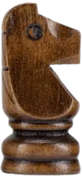
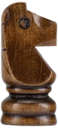

The knight is the piece that looks like a horse. This is the most complicated piece to explain
as it has a very unique movement. The knight is worth 3 points and is considered a minor piece. It is
generally considered as strong as a bishop, but for its own unique reasons. While both pieces are worth 3
points, there will be some positions where the knight will reign supreme.You begin with two knights. They
will be located in between your rook and bishops on squares b1/g1 for white and b8/g8 for black. The knight
is the only piece on the board that can jump over another piece. In that way, the knight has a leg up on the
queen, but controls fewer total squares than the queen can. The movement of the knight can be thought of as
an L. You can think of it as a two-one or a one-two approach. This means that the knight can move two
squares up/down/sideways followed by one square to make an L or it can move one square up/down/sideways
followed by two squares to make an L.
 
